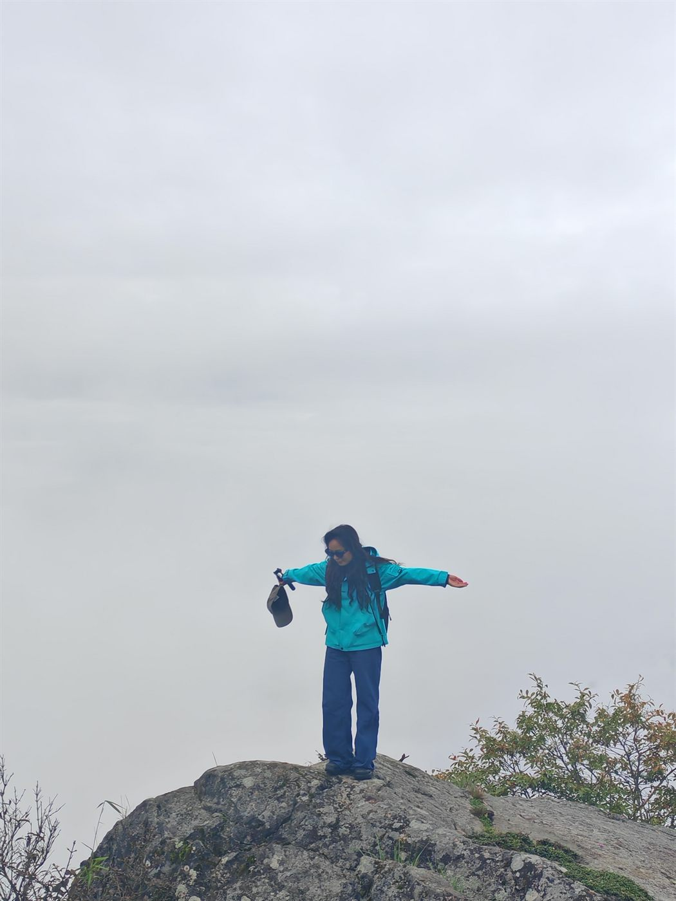
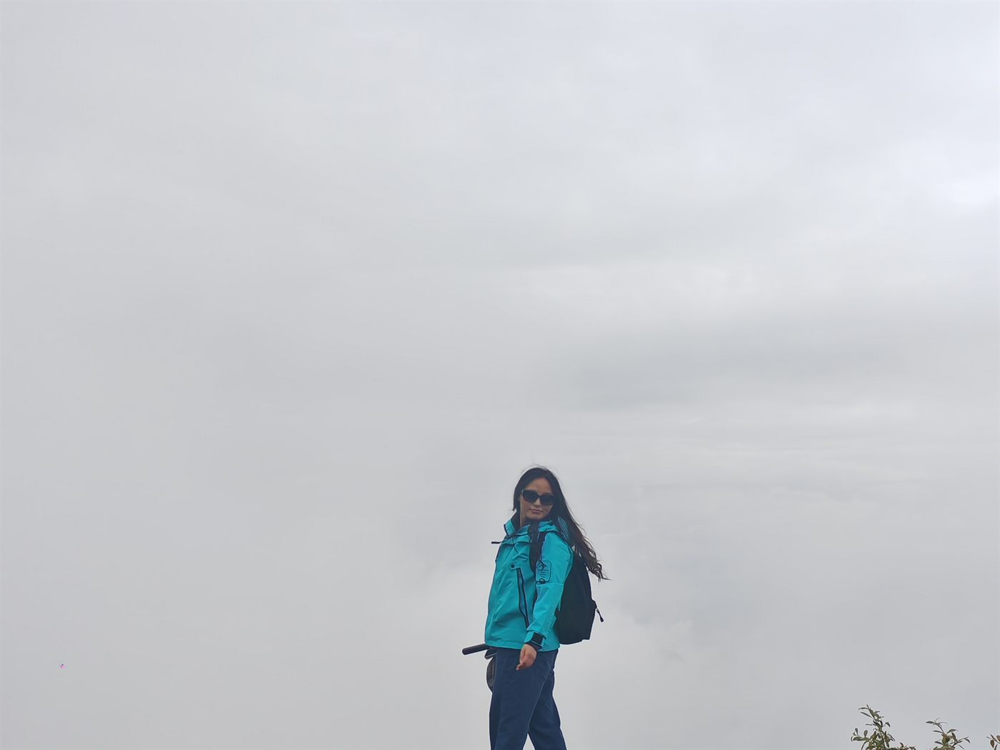
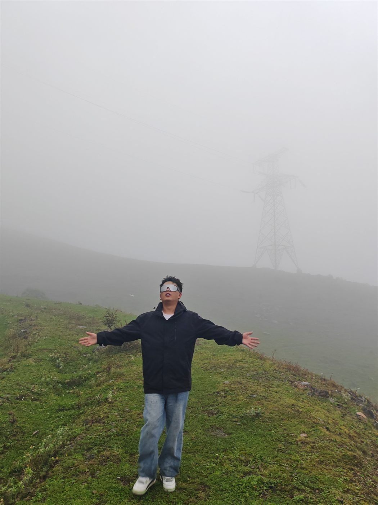
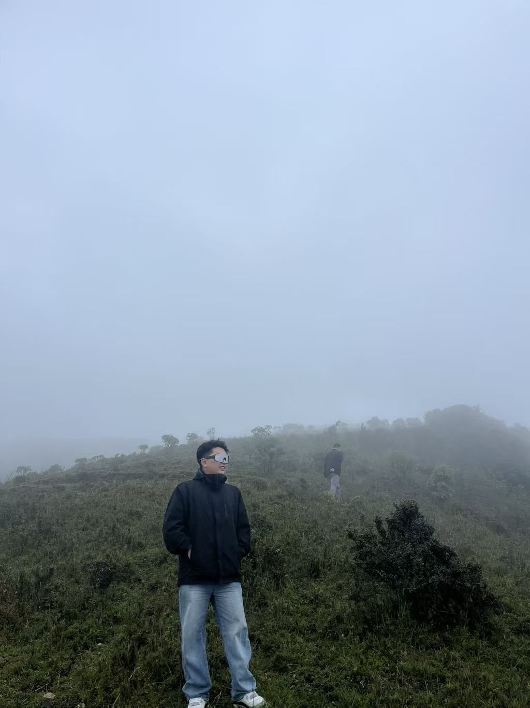
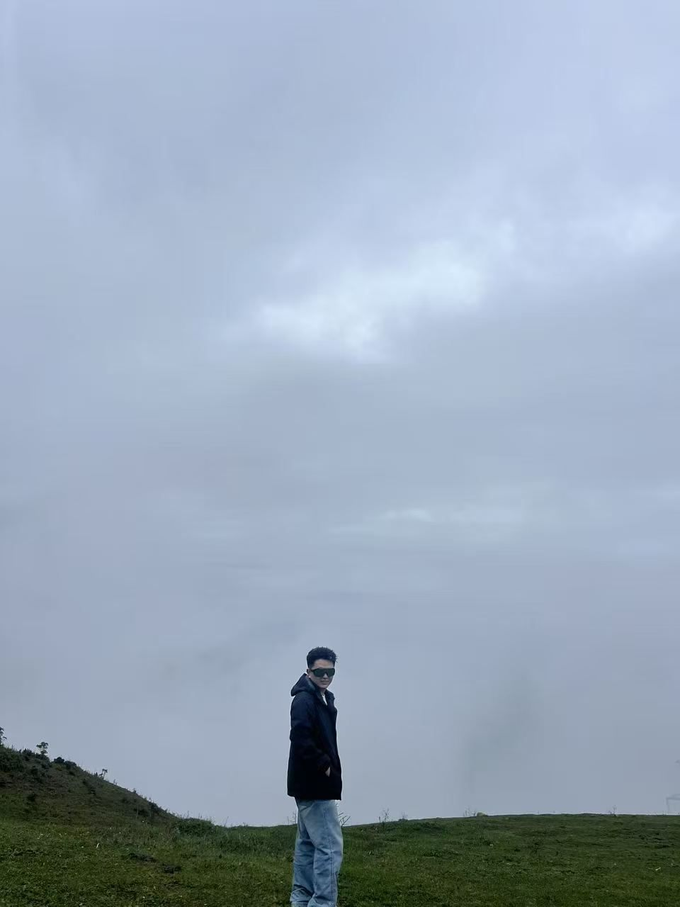
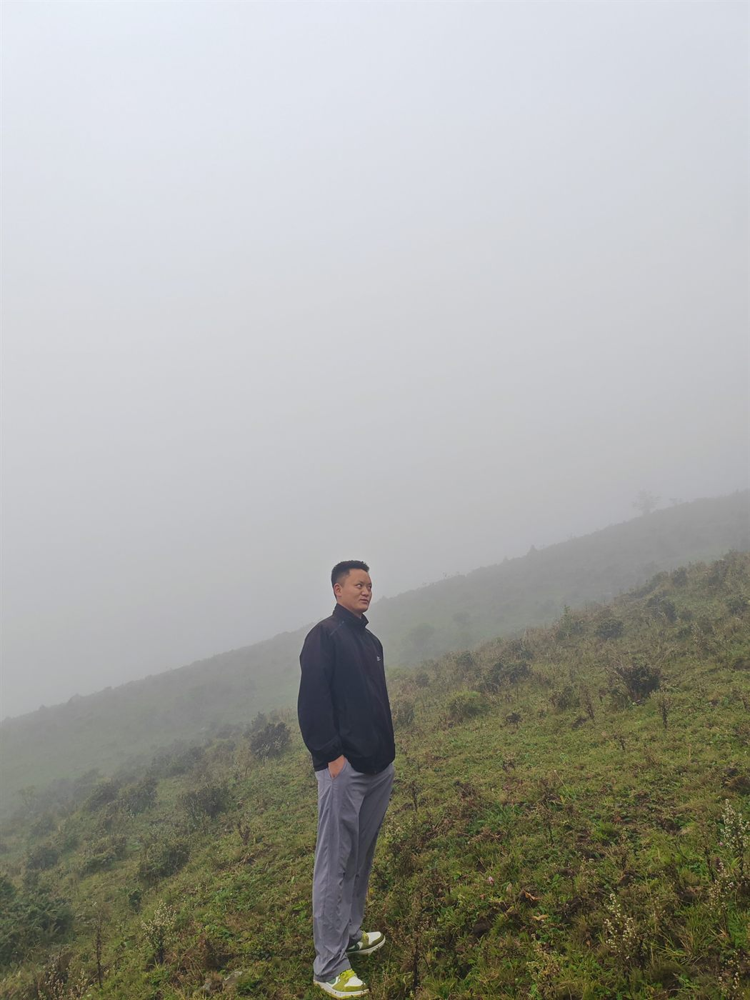
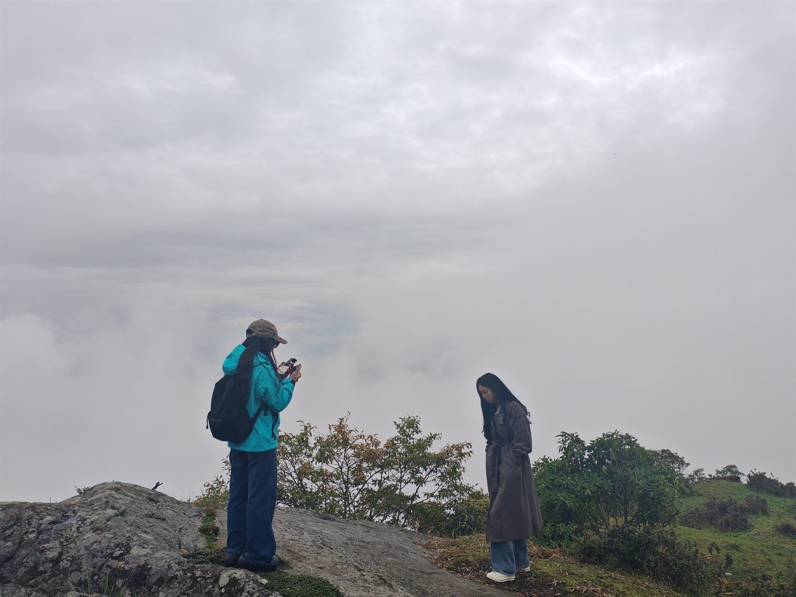
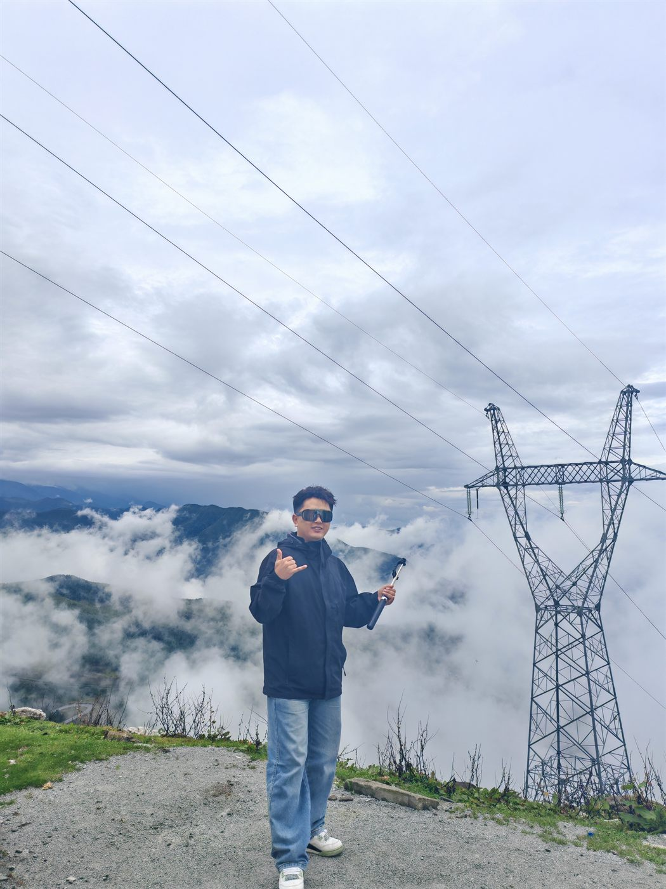

那天山上的云
八张照片，其实就一天。左右翻一翻，像把那天再走一遍——雾、草坡、脚底下翻着的云。
01 / 08







一罐糖纸
放你愿意留住的照片。图片会被压到长边 1400 像素再存进浏览器的本地数据库， 关掉页面也还在，但换台电脑就没了。
还没有照片把照片拖到这里
也可以点一下，一次选好几张。JPG、PNG、WEBP 都认，动图和高像素的会慢一点点
放之前先说清楚三件事
照片不会传给任何人，也不会上传到云端，读取和缩放都在你自己的浏览器里完成。 清掉浏览器数据会一起清掉这罐糖纸，重要的话记得另存一份。
只存本机
长边压到 1400px
可随时取回
罐子还是空的，先放一张进来吧
随手一张都行，晚霞、猫、外卖、出租房的窗台糖罐里的心事
下面这一百段心事是编出来给你翻的，五个阶段各二十段——刚认识、已经很熟、各在一方、闹别扭和好、一直做朋友。不指向谁，也不一定真的发生过。 可以搜、可以筛、可以收藏，点开看细节。
没找到这样的心事
清掉筛选条件，就能看到全部 100 段